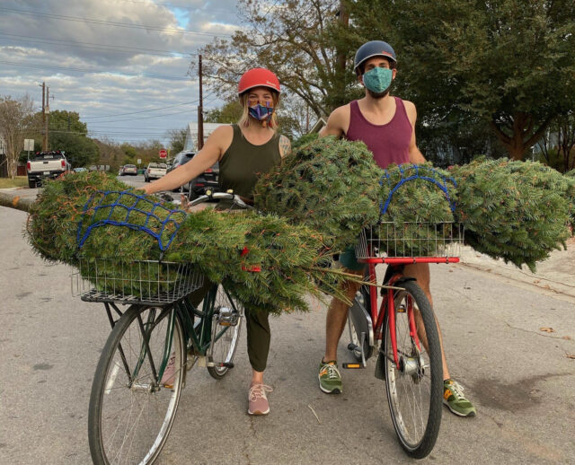
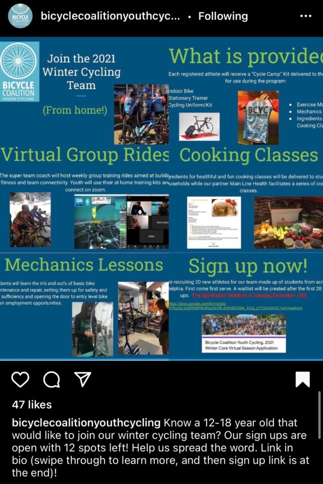

How Bike Share Is Spreading Holiday Cheer — the Socially Distant Way
by Farrah Daniel, Better Bike Share Partnership Writer
December 16, 2020

Photo courtesy of PeopleForBikes’ Ride Spot
The COVID-19 pandemic that continues to tear through America shifted almost everything we’ve come to consider to be “normal.” Still, throughout the year, we’ve shared stories about how bicycles and shared micromobility have united communities and provided access to safe and affordable transportation to those who need it the most. Here are a few stories to check out after this article:
- Fighting COVID-19 With Comm(unity)
- Tips for Maximizing Your Bike During COVID-19
- Houston Bcycle & Hawaii Island Bike Share: Bike Share for All During COVID-19
- More Than Just A Care Package — Providing Support In A Pandemic
Due to social distancing mandates, the holidays also look quite different this year. Every year, we share the ways bike share systems celebrate the holidays with their communities, and we’re going to keep up the tradition of featuring safe ways to ride and spread the holiday cheer, despite not being able to do so with large groups.
Bike share engagement during the winter months is especially tricky. While some systems close for the season, many remain open and encourage riders to brave the cold to reap all the benefits bicycling has to offer — even when it’s dreary out. To excite residents, bike share systems and nonprofit organizations across the country devise creative and interactive ways to get people outdoors and riding bike share.
From decorated bikes to community service and light rides, make the season brighter and get around on two wheels instead of four! To welcome in the holiday season, here are some examples of how cities have shaken up winter riding with bike share this year:
1. Atlanta
If you’re in Atlanta, the Atlanta Bicycle Coalition is offering a fun way to ride bikes and get rewarded for it. Until December 25, join the Love to Ride Winter Wheelers community to help make Atlanta more bike-friendly as well as have the chance to win cycling gear, a $1,500 gift card to your favorite local bike shop and much more. All you have to do is register, ride anytime and anywhere between now and Christmas, then log your ride on the website the following day.
🚲❄️Surprise! Another post asking you to continue riding — despite the cold.@LovetoRide_ is offering some 🔥 winter prizes just for riding your bike. Sign up at https://t.co/YS4uxyZ65M for the chance to win something everyday–even an electric bike at the end of the month! pic.twitter.com/YEoETtGB9M
— Propel ATL (@letspropelatl) December 3, 2020
2. Detroit
MoGo Detroit brings in the holiday season with its FrostBike every year, but this year, it rolled out a new Light Bike! The winter-themed bikes are available for any lucky riders who spot them and as you can see below, riders are encouraged to document then share their experience on MoGo Detroit’s social media channels.
Have you tried MoGo's light bike at Beacon Park Detroit yet? Simply use your #PedalPower to make the sign glow! Post and tag us at @MoGoDetroit, or send us your pictures, and we'll feature you on our social media!#LightBike #PedalPower #MoGoDetroit #Holdiays #LightUpTheNight pic.twitter.com/5RgeIycLgc
— MoGo Detroit (@MoGoDetroit) December 9, 2020
Check out this awesome light bike snapshot from Monica!
Post and tag us @MoGoDetroit, or send us your pictures, and we'll feature you on our social media too!#LightBike #PedalPower #MoGo #Detroit #MoGoDetroit #Holidays #Tagged #Featured #LightUpTheNight #TagUs pic.twitter.com/3cVottFLtV
— MoGo Detroit (@MoGoDetroit) December 14, 2020
3. Fort Worth
Last year, Fort Worth Bike Sharing got to host its annual Tour de Lights event, where community members ride through downtown Fort Worth to see the city’s famed Christmas tree and receive a festive send-off from Santa Claus.
This year, however, Fort Worth Bike Sharing won’t hold the event, though it encourages riders to lead their own safe and socially-distant rides to see the light display in downtown Fort Worth. Plus, new ‘decked the halls’ bikes rolled out for the system’s holiday photo contest! Riders who take a picture with one of the bikes and tag Forth Worth Bikesharing on social media stand to win two free membership passes.
Our holiday bikes are back! We have 'decked the halls' on some of our bikes and they are ready for you to find. If you do, take a picture with the bike & tag us to win 2 free passes! #bikeshare #sharingseason #fortworth #fwtx pic.twitter.com/UlEw22Acvt
— Fort Worth Bike Sharing (@fwbikesharing) December 7, 2020
We may not be able to meet in person for a Tour de Lights ride this year, but the lights are still there for your viewing pleasure. Gather your quaranteam for a ride and get in the spirit! #fortworth #bikedfw #seefortworth pic.twitter.com/wAhdirIY4o
— Fort Worth Bike Sharing (@fwbikesharing) December 13, 2020
4. Philadelphia
The Bicycle Coalition of Greater Philadelphia (BCGP) will host its annual Holiday Lights Ride event virtually! Typically, the ride involves bicycling through South Philadelphia communities with a large group, then visiting local shops to enjoy hot cocoa and an evening of bike decorating. This holiday, however, riders have until December 31 to RSVP for the virtual ride to receive three route options and lead their own ride with loved ones or on their own.
In previous years, Indego bike share offered a limited number of bikes for participants to use for free. While details about this haven’t been shared, be sure to check out an Indego e-bike for the Holiday Light Ride and really get into Philly’s holiday spirit.
In addition to the virtual light ride, the BCGP team will also lead a Winter Cycling Team for 12- to 18-year-olds who’d be interested in virtual group rides, mechanic lessons and more. Learn more on the team’s Instagram.

The 2020 Holiday Lights Ride through South Philadelphia has gone virtual! RSVP to get 3 different route options in your email! Ho ho ho! https://t.co/P69sIwJug7 via @bcgp
— Bicycle Coalition of Greater Philadelphia (@bcgp) December 13, 2020
5. Pittsburgh
Pittsburgh’s Healthy Ride bike share system is celebrating the holiday season with the community with its themed Holiday Bike! If you’re in the area, you have until January 1 to ride one of these limited edition bikes.
We've got a gift for you, Pittsburgh…it's the Holiday Bike! Spread holiday cheer on two wheels 🚲🎁
This present will be cruising the streets until the New Year! pic.twitter.com/35ZtDr0j5j— POGOH (@pogohbikes) December 3, 2020
🎄 Happy holidays! We wish you warmth on your winter rides and a happy holiday season. Be sure to wear a mask as you ride to keep yourself and others in your community safe! To learn more about COVID-19 restrictions in your city, visit the CDC🎄
The Better Bike Share Partnership is funded by The JPB Foundation as a collaborative between the City of Philadelphia, the Bicycle Coalition of Greater Philadelphia, theNational Association of City Transportation Officials (NACTO) and the PeopleForBikes Foundation to build equitable and replicable bike share systems. Follow us onFacebook, Twitter and Instagram or sign up for our weekly newsletter. Story tip? Write zoe@betterbikeshare.org.